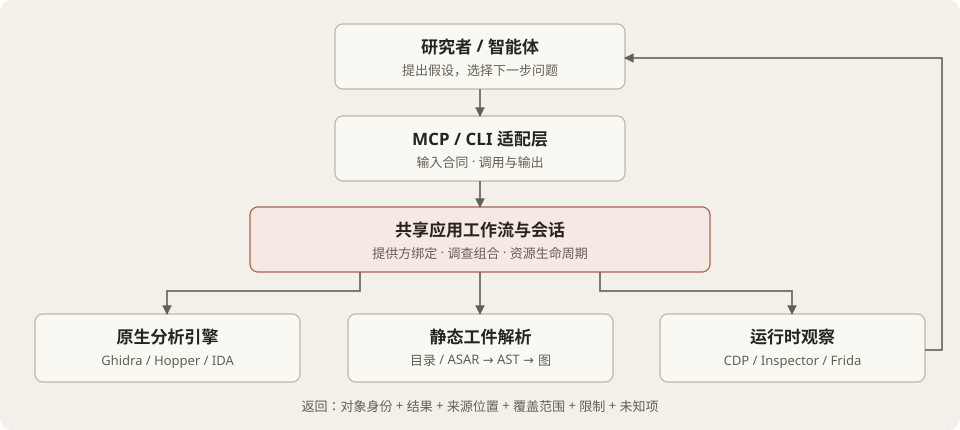
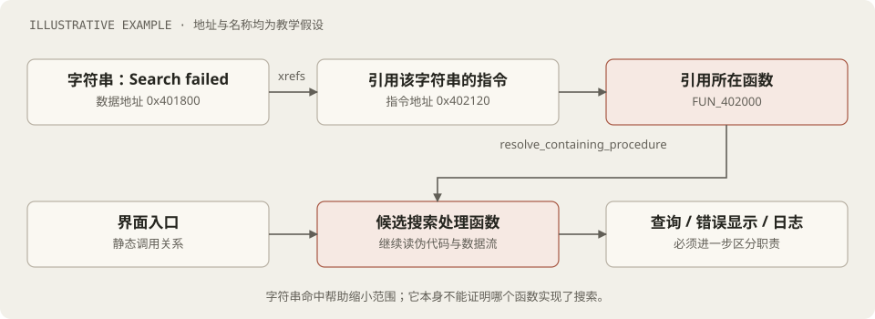
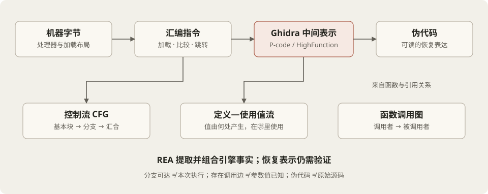
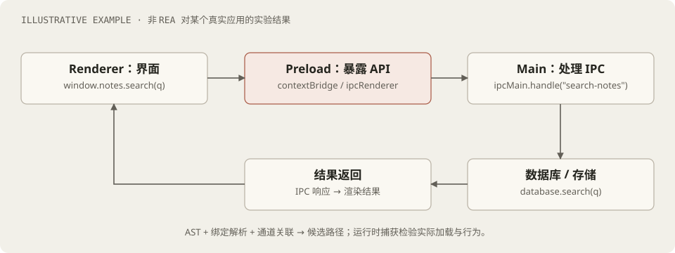
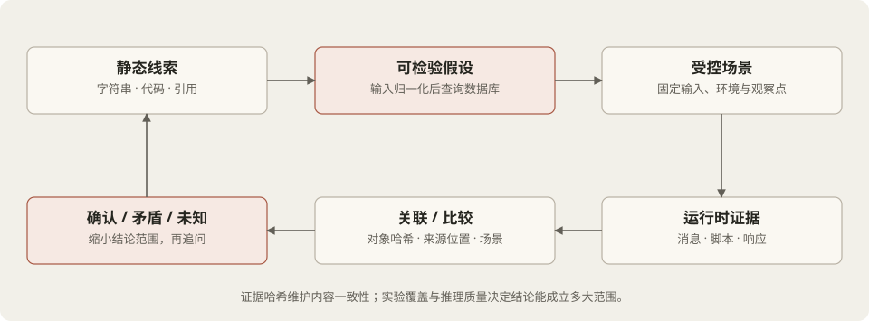

01 / 研究对象：从可执行物恢复可验证的解释
REA（Reverse Engineer Anything）把原生分析、交付工件解析、运行时观察及证据管理连接成统一的本地工具。它提供 MCP 和 CLI 两种入口；智能体通过 MCP 选择工具、解释返回结果，再提出下一步问题。理解这个项目，需要同时看逆向方法和系统工程。
正向开发从需求走向源码、编译或打包以及可观察行为。逆向分析从交付文件与行为出发，逐步寻找实现机制。编译优化和打包会改变表示，符号剥离会丢失名称，机器码通常不保留注释；因此恢复目标应当是有证据约束的程序解释，而非保证复原作者最初的文本。
| 研究层次 | 要回答的问题 | 验收依据 |
|---|---|---|
| 行为 | 哪些输入产生哪些输出或副作用？ | 固定场景的输入、输出、时序与环境 |
| 机制 | 控制经过哪些组件？值如何变换？ | 函数、模块、引用、控制流和数据流 |
| 重建 | 能否独立实现指定行为？ | 候选实现与原对象的限定场景对照 |
02 / 系统分层：MCP 入口之后发生了什么

src/main.ts 使用 MCP SDK 的 serveStdio 建立入口；src/server/ 注册具名工具合同，把请求交给共享应用工作流。src/application/ 描述调查操作，src/composition/ 装配会话与提供方，提供方适配器负责引擎协议。纯领域模块负责证据、图结构和比较语义。
例如 registerEnhancedTools.ts 通过 toolContract("analyze_function") 等合同绑定输入与处理器。适配边界已经校验的输入交给 executeValidated，直接调用者则由工作流校验。这样既保留 CLI/MCP 的共享语义，也避免在不同层反复解释同一份输入。
| 角色 | 职责 | 研究者应注意 |
|---|---|---|
| 智能体 | 形成问题、选择工具、解释证据 | 解释质量仍需要研究方法与复核 |
| MCP / CLI | 暴露合同，翻译请求和结果 | 协议不负责反编译算法 |
| 应用层 | 组合查询、绑定目标、管理会话 | 工作流应保留来源与失败语义 |
| 提供方 / 解析器 | 产生引擎事实或语法事实 | 支持范围随目标与宿主变化 |
| 领域层 | 证据身份、图和比较规则 | 不能把未知转换成成功 |
源码路标：src/main.ts ↗ · src/server/registerEnhancedTools.ts ↗ · docs/architecture.mermaid ↗
03 / 先确定分析对象：身份、架构与提供方绑定
在读取函数之前，必须回答“我们分析的是哪个版本、哪种架构、在什么加载配置下得到的结果”。同名应用可能有不同二进制；相同机器字节在不同基址或语言配置下，地址解释也可能不同。把结果仅绑定到一个文件名，无法支持严谨复核。
AnalysisProviderRegistry 对提供方的可用性、目标支持和能力进行评估；AnalysisProviderBinding 明确记录选中的提供方、选择来源和分析配置。SessionProviderRouter 把已选择的深度分析路线与不重叠的辅助操作连接起来。架构说明强调确定性选择与无隐式后备切换：分析失败后悄悄换引擎，会改变事实来源和表示。
analysisProfile.ts 将提供方身份和影响分析的参数规范化，再计算 SHA-256 配置摘要。缓存或重放必须考虑目标身份与分析配置的相容性；“已有缓存”不是“当前结果仍然有效”的充分条件。
研究记录的最小上下文
目标文件及 SHA-256
格式、架构、加载配置
提供方身份与版本
操作名称、参数与选择来源
返回结果的位置、范围与限制源码路标：src/application/binary/AnalysisProviderRegistry.ts ↗ · src/application/binary/SessionProviderRouter.ts ↗ · src/domain/analysisProfile.ts ↗
04 / 第一条调查链：关键词 → 交叉引用 → 所属函数
假设研究问题是“应用的搜索功能如何实现”。用户能看到按钮、错误提示或菜单文本，这些是候选锚点。原生程序中的文本通常存放在数据区域，代码通过地址引用它。寻找引用，比只列出字符串更接近功能实现。

EnhancedLiteralTracing.ts 的 traceLiteralFeature 依次调用 search_strings 和 search_procedures，使用字面量模式和调用者选定的大小写语义，校验结果结构，并按类型与地址去重。随后对每个命中调用 xrefs，再用 resolve_containing_procedure 把引用位置归属到函数。
for (const match of request.matches) {
const xrefs = await call(
"xrefs",
{ address: match.address },
request.signal,
);
if (!xrefs.ok) return xrefs;
if (!Array.isArray(xrefs.value))
return err(
new AnalysisOutputError(
"xrefs",
"provider returned a non-array result",
),
);
for (const source of xrefs.value) {
if (typeof source !== "string")
return err(
new AnalysisOutputError(
"xrefs",
"provider returned a non-address value",
),
);
const resolved = await call(
"resolve_containing_procedure",
{ address: source },
request.signal,
);
if (!resolved.ok) return resolved;
references.push({
target_address: match.address,
source_address: source,
containing_procedure: resolved.value,
});
}
}出处：src/application/EnhancedLiteralTracing.ts ↗
这一节选显示两个不同坐标：match.address 是被引用对象的位置，source 是引用它的源位置。结果同时保留两者和所属函数，避免只返回一个名称而丢失关联证据。实际文件对非数组结果、非地址值以及操作错误均有显式处理。
05 / 原生分析：桥接脚本如何构造函数档案
analyze_function 返回函数档案（dossier）。EnhancedTools 的组合入口将它交给提供方并校验档案结构；MCP 对函数档案采用 executeFunctionAnalysisEvidence 专门封装路径，保留提供方返回的原始结果、位置、限制和分析配置。以 Ghidra 为例，适配器通过受管理的桥接进程请求运行在引擎内的 ReaGhidraBridge.java。
沿着 MCP 实际调用链阅读：工具注册 → executeFunctionAnalysisEvidence → analysis.execute("analyze_function") → 已绑定的提供方客户端 → GhidraClient.callTool → Java 桥接方法 → 结果校验 → Evidence → MCP 返回。GhidraProviderClient.ts 校验操作输入和函数结果；protocol.ts 使用请求 ID 与严格的成功/失败响应结构，拒绝不合法 JSON 和形状错误。引擎协议不会被当成领域语义直接传递。
桥接脚本的 analyzeFunctionObservation 解析精确函数，扫描指令、执行反编译、收集引用及基本块，再构造统一 JSON。函数内部的入向引用会被过滤出档案的外部入向关系；没有解析到目标地址的间接流不会凭空补成引用边。
private FunctionAnalysisObservation analyzeFunctionObservation(JsonObject params) throws Exception {
requireKeys(params, Set.of("procedure"));
Function function = resolveProcedure(requireString(params, "procedure"));
InstructionScan scan = scanInstructions(function, Integer.MAX_VALUE);
DecompileResults decompilation = decompile(function);
String pseudocode = decompiledText(decompilation);
if (pseudocode == null) {
pseudocode = "";
}
List<Reference> incomingReferences = collectReferences(function, "incoming")
.stream()
.filter(reference -> !function.getBody().contains(reference.getFromAddress()))
.toList();
List<Reference> outgoingReferences = collectReferences(function, "outgoing");
JsonArray incoming = referenceEdges(incomingReferences);
JsonArray outgoing = referenceEdges(outgoingReferences);
JsonArray comments = comments(scan.instructions);
JsonArray callers = procedureIdentities(function.getCallingFunctions(monitor));
JsonArray callees = procedureIdentities(function.getCalledFunctions(monitor));
JsonArray referencedStrings = referencedStrings(outgoingReferences);
JsonArray referencedNames = referencedNames(outgoingReferences);
JsonArray blocks = basicBlockValues(function);
JsonArray assembly = GSON.toJsonTree(renderAssemblyLines(scan.instructions))出处：bridge/ghidra/ReaGhidraBridge.java ↗
| 档案字段 | 含义 | 使用方式 |
|---|---|---|
| assembly / pseudocode | 机器指令与恢复的高级表达 | 对照解释条件、循环与调用 |
| callers / callees | 函数之间的调用关系 | 定位入口、依赖和后续路径 |
| incoming / outgoing references | 代码或数据之间的引用边 | 查调用现场、常量与资源使用 |
| referenced strings / names | 引用到的语义锚点 | 为匿名函数形成职责假设 |
| basic blocks | 函数内的基本块结构 | 调查分支与循环 |
| native_api / native_value_flow | 调用边界与引擎恢复的值流信息 | 核验参数、返回和定义—使用关系 |
反编译的关键步骤是调用 Ghidra 的 DecompInterface.decompileFunction；完成后从 getDecompiledFunction().getC() 取得伪代码。桥接层对取消和反编译失败给出不同错误。REA 自己编写了适配、信息提取和调查组合代码；这条路线的反编译算法来自 Ghidra。
private DecompileResults decompile(Function function) {
if (function.isExternal() || function.getBody().isEmpty()) {
return null;
}
DecompileResults results = decompiler.decompileFunction(
function,
0,
monitor
);
if (results.isCancelled()) {
throw new RequestFailure("decompile_cancelled", "Ghidra decompilation was cancelled");
}
if (!results.decompileCompleted()) {
throw new RequestFailure(
"decompile_failed",
"Ghidra decompilation failed: " + diagnosticMessage(results.getErrorMessage())
);
}
return results;06 / 深入分析：控制流、调用图与值流是三件事

控制流图 CFG的节点是基本块，边表示可能的跳转。它回答“哪个条件决定执行哪段代码”。调用图的节点是函数，边表示调用关系。它回答“逻辑跨越了哪些函数”。定义—使用值流的节点与边关联值的产生和消费。它回答“用户输入如何变换，哪一个值传给了数据库查询”。三个问题不可互相替代。
CallPathTracing.ts 用队列、访问表和边集合进行广度优先展开。向前查询 procedure_callees，向后查询 procedure_callers，到达目标或队列耗尽后投影结果；无法查询的节点被记录为失败和残余未知，而不是当作没有边。访问表避免递归或环带来的无限重复。
教学示意：广度优先展开
queue = [start]
visited = {start}
while queue 非空且尚未到达 goal:
f = 取出队首
relationships = 查询 f 的 callers 或 callees
若查询失败：记录该节点的未知，继续其他节点
对每个尚未访问的目标：记录边与路径，加入队列
返回路径、已发现的图、覆盖范围与失败信息值流则来自 Ghidra 的 HighFunction 和 P-code。桥接脚本读取 P-code 操作和相应值；没有 HighFunction 时返回明确的不可用状态。跨函数的 NativeValueTrace.ts 使用函数档案，检查目标 SHA-256 一致性，仅沿精确引用的调用目的地组合定义—使用图，并记录函数预算耗尽或反编译失败等未知。
这不是对所有路径、堆状态、别名和动态目标的完整形式化证明。P-code 帮助统一不同机器指令的语义表示，但分析仍受引擎恢复、调用解析和资源范围约束。
源码路标：src/application/CallPathTracing.ts ↗ · src/application/native/NativeValueTrace.ts ↗
07 / JavaScript 与 Electron：从交付代码恢复应用关系
JavaScript 交付物常保留可解析文本，不过变量名可能压缩、模块可能合并，代码可能位于 ASAR 中。REA 的 JavaScriptArtifactReader 在目录读取器与 ASAR 读取器之间选择；静态分析以文本和归档为输入。此流程不会为了分析而执行目标应用代码。
javascriptSourceParser.ts 通过 Babel 解析 AST，并根据扩展名选择 TypeScript、JSX 等模式，保留语法恢复信息。AST 将导入、函数、调用和参数变成结构化节点。之后的模块解析、绑定和语义图投影关联这些事实；AST 本身并不能自动解析所有动态代码。

/* 教学示例，不是某个目标应用的提取结果 */
// preload.js
contextBridge.exposeInMainWorld("notes", {
search: q => ipcRenderer.invoke("search-notes", q)
});
// main.js
ipcMain.handle("search-notes", (_, q) => database.search(q));
// renderer.js
const results = await window.notes.search(keyword);源码中的 JavaScriptApplicationService 调用工件重建流程，验证结果与跨图绑定，再创建证据。应用图描述 package、ASAR entry、module、preload、IPC channel、handler、endpoint、storage、native add-on 等实体，通过 imports、exposes、invokes、handles、persists_to 等关系组织调查。
JavaScriptSemanticGraphElectronProjection.ts 将发现的 Electron 路径投影到语义图，路径节点和边的解析状态可为 candidate，位置证据标为推断。这个细节比“找到了完整调用链”更准确：别名、包装器和通道关系可能产生候选解释，需运行时证据支持。
Source map 若存在，可把生成代码位置映射到原始源位置，并可能包含源文本；它不保证包含完整源码，也不证明运行时当前加载的字节就是这份静态文件。动态通道、计算属性、运行时下载的模块和复杂混淆仍需要显式保留未知。
源码路标：src/application/javascript/JavaScriptApplicationService.ts ↗ · src/domain/javascript/javascriptSourceParser.ts ↗ · src/application/javascript/JavaScriptSemanticGraphElectronProjection.ts ↗ · docs/javascript-application-graph.md ↗
08 / 运行时观察：把解释变成可检验假设
静态分析后，可以提出一个可反驳的假设：“搜索入口把用户输入变为某种归一化文本，然后调用本地查询，结果再经 IPC 返回”。验证需要固定输入、环境、版本和观察点；不能只记录“点击后成功”就宣布机制已恢复。
| 路线 | 源码中的机制 | 能支持与不能支持的判断 |
|---|---|---|
| 浏览器 / CDP | 采集页面、脚本、网络等观察 | 支持指定捕获窗口内的事实；不代表所有执行 |
| V8 Inspector | 观察已有 Node/Electron 目标与脚本 | 帮助确认实际加载对象；观测范围仍有限 |
| Frida | attach / spawn → createScript → load → 消息回调 | 结果由插桩脚本决定；需要选对目标和观察点 |
FridaInstrumentationManager.ts 懒加载可选绑定，管理设备和会话，加载调用者编写的脚本并接收消息。spawn 路线可先暂停，让脚本加载后再恢复。取消与关闭涉及卸载脚本、detach 和恢复目标，失败时保留资源与诊断，避免把尚未释放的状态报告成已完成。
运行时捕获还必须与静态对象对齐。reconcile_javascript_runtime 接受已经生成且经语义验证的静态与运行时 Evidence，本身不进行文件或浏览器 I/O。匹配逻辑同时考察来源字节摘要和显式路径映射；源码保留 unknown、ambiguity 和 mismatch 等分类，生成的 observed_as 关联边仍属于推断。
源码路标：src/frida/FridaInstrumentationManager.ts ↗ · src/application/javascript/JavaScriptRuntimeReconciliationService.ts ↗ · src/domain/javascript/javascriptRuntimeReconciliationMatching.ts ↗
09 / Evidence：结果怎样成为可追溯的研究材料

domain/evidence.ts 使用严格模式定义证据合同。记录不是一段结论文本，而是目标、操作、来源、结果与限制的组合。FunctionAnalysisEvidence.ts 在封装函数档案时保留提供方的 raw result、locations、limitations、relationship coverage 和 analysis profile。
| 字段组 | 为什么需要它 |
|---|---|
| subject / provider / analysis_profile | 确认对象、引擎与分析参数 |
| operation / parameters | 重建提出的问题 |
| raw_result / normalized_result | 区分边界返回与统一表示 |
| locations / evidence_links | 回到地址或工件，并关联上游材料 |
| confidence / authority | 区分观察、派生、推断及来源类型 |
| limitations / relationship_coverage | 解释遗漏与结论适用范围 |
confidence 的三种值是 observed、derived、inferred。例如，引擎报告某条引用属于观察；基于已取得边计算路径属于派生；认为该路径实现搜索属于机制推断。这里的标签描述证据性质，不是统计意义上的置信概率。
记录使用内容派生的 ev_ 标识，解析时可验证记录内容是否匹配标识；EvidenceLedger 持有不可变记录，对重复内容幂等处理，并拒绝同一身份的冲突内容。未知项拥有独立记录与修订语义，因此后续可以更新解决状态而不抹去此前的调查历史。
源码路标：src/domain/evidence.ts ↗ · src/application/FunctionAnalysisEvidence.ts ↗ · src/application/investigation/EvidenceLedger.ts ↗
10 / 贯穿案例：调查一个搜索功能的完整实验方案
下表是一份可执行的研究设计，并非本轮已完成的实验。目标是从“搜索能返回结果”推进到“输入处理、查询与返回机制有独立证据支持”。先选择自己编写或能够分析的示例应用，冻结工件版本并给每轮实验编号。
| 步骤 | 动作与产物 | 继续前需要回答 |
|---|---|---|
| A · 冻结对象 | 记录目标哈希、格式、架构、引擎版本 | 这份结果对应哪个对象？ |
| B · 获取锚点 | 搜索文本、符号或 IPC 通道 | 命中是职责线索还是单纯日志？ |
| C · 定位实现 | 读取函数档案或 AST 路径 | 用户输入在哪进入？输出在哪返回？ |
| D · 提出假设 | 写出归一化、查询、排序等候选机制 | 每条机制如何被观察或反驳？ |
| E · 受控执行 | 固定场景，记录参数与返回、网络或消息 | 静态对象与运行时对象是否一致？ |
| F · 对照分析 | 比较输入、结果、错误和时序 | 发现了哪些矛盾与未覆盖分支？ |
| G · 独立实现 | 实现所需行为并重复同一场景 | 哪些义务已验证，哪些仍未知？ |
例如空输入可检查早退路径；含空格和大小写变体可检查归一化；存在与不存在的关键词可区分正常结果和无结果；重复输入可调查缓存。以下预期应在实验前写下，结果出来后再更新。
| 场景 | 待检验假设 | 保留的观察 |
|---|---|---|
| 空字符串 | 入口可能在查询前返回 | 是否到达查询观察点、返回值、界面状态 |
| 首尾空格 / 大小写 | 输入可能经过 trim 或大小写转换 | 入口参数与查询参数对照 |
| 无匹配项 | 空结果与错误走不同分支 | 响应结构、提示与错误信息 |
| 重复输入 | 可能命中缓存 | 查询次数与时序，避免把延迟单独当证据 |
| 查询故障 | 存在错误处理与恢复逻辑 | 异常位置、错误返回及后续可用状态 |
11 / 重建与验证：通过有限场景意味着什么
功能重建要先定义待实现的义务：输入输出、状态变化、持久化、错误处理、边界调用、时序和资源清理。外观相近只是其中一部分；有限输入的测试通过也不意味着对全部输入等价。
仓库的 docs/reconstruction-readiness.md 描述项目自有的 conformance 验证路线，覆盖发现、诊断、静态分析、场景、比较、矛盾保留、重建义务、导出重放等阶段。它明确说明该报告评估器属于仓库验证器，不是公开 MCP 或 CLI 工具；不能将内部 readiness 流程写成用户已经拥有的自动化等价证明。
这份验证合同要求 fail、unknown、unsupported、truncated、skipped 不聚合成 pass，并检查过期或篡改的重放。并发行为还需要合理的部分序或有限轨迹比较语义，不能按一个偶然的全序输出宣称完全相同。本轮只核对了文档与相应结构，没有实际运行 verifier。
项目验证合同：docs/reconstruction-readiness.md ↗ · docs/reconstruction-obligation-ledgers.md ↗
12 / 源码阅读路径与研究练习
建议按“可理解的小工作流 → 引擎边界 → 图算法 → 证据与实验”推进。先手工跟踪一次输入输出，再深入抽象；避免一开始被大量工具注册文件淹没。
| 阅读顺序 | 代码入口 | 交付练习 |
|---|---|---|
| 1 · 字符串调查 | src/application/EnhancedLiteralTracing.ts ↗ | 标出被引用对象、源地址与所属函数；说明能支持的结论 |
| 2 · 函数分析 | bridge/ghidra/ReaGhidraBridge.java ↗ | 把档案字段对应到 Ghidra 调用和限制 |
| 3 · 调用与值流 | src/application/CallPathTracing.ts ↗ src/application/native/NativeValueTrace.ts ↗ | 对递归、环、查询失败和预算耗尽推演输出 |
| 4 · JS 结构 | src/application/javascript/JavaScriptApplicationService.ts ↗ src/domain/javascript/javascriptSourceParser.ts ↗ | 自写三文件 Electron 示例，区分语法事实与路径推断 |
| 5 · 动静关联 | src/domain/javascript/javascriptRuntimeReconciliationMatching.ts ↗ | 构造同路径不同内容、同内容多路径的匹配歧义 |
| 6 · 证据审计 | src/domain/evidence.ts ↗ src/application/investigation/EvidenceLedger.ts ↗ | 解释改一个参数为何影响身份，并说明哈希不能证明什么 |
进阶讨论：如果搜索结果一样，能认定实现机制一样吗？
不能。线性扫描、倒排索引、数据库全文检索和远端服务都可能对有限输入返回相同结果。要区分机制，需要提出具有区分力的观察，例如查询边界、存储访问、网络行为或数据结构使用。延迟变化只能作为辅助线索，不能单独证明算法。
进阶讨论：删掉未知项，会使报告更简洁吗？
形式上更短，但失去了结论边界。更合适的方式是给用户展示与当前问题有关的摘要，并保留可访问的完整证据和未知。减少展示成本不能改变事实覆盖与不确定性。
本文所有项目引用固定到提交 ca2d15b3ee965bd7ab27204cdf4b96b117d148c1 ↗。图解为本笔记原创 SVG；源码节选来自 REA 项目，遵循其 MIT License ↗，并随站保留 版权与许可全文。阅读笔记是源码研究记录，不属于 REA 官方文档。
卷末 · READING NOTE 001
返回阅读目录 ↗